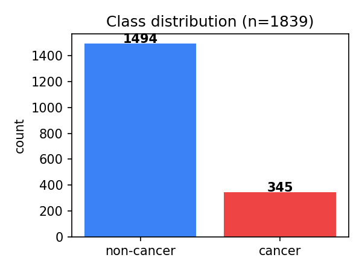
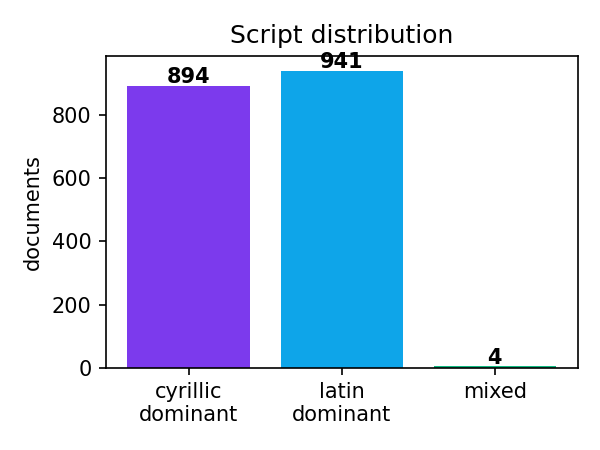
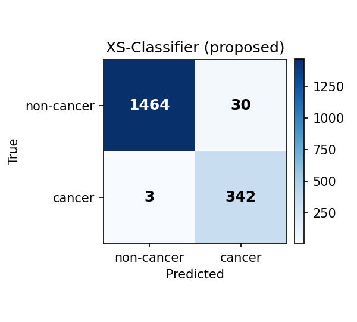
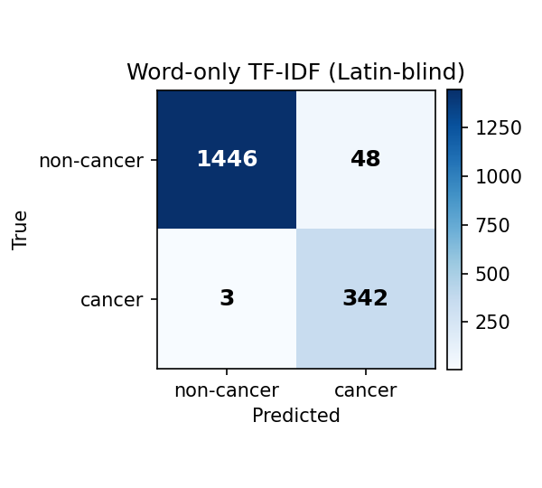
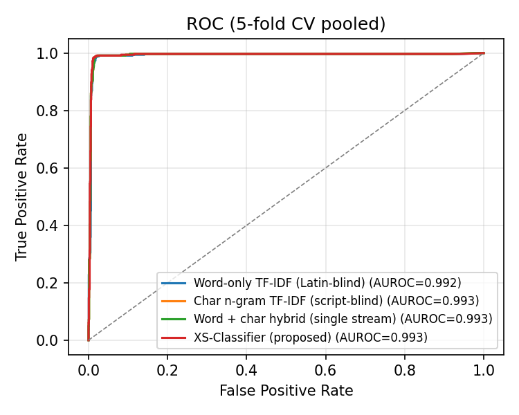
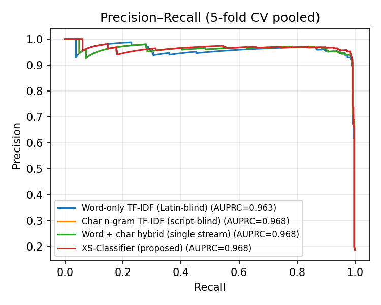

Authors: [Your name(s)]¹
¹ [Institution]
Corresponding author: [email]
Background. Mammographic radiology reports in post-Soviet Central Asia are routinely written in three coexisting scripts: Cyrillic Uzbek, Latin Uzbek, and Russian — frequently switching within a single document. Conventional natural-language processing pipelines either pick one script and discard the others, or collapse all scripts into a single feature space, both of which underuse the strong cross-script vocabulary correspondences present in the underlying language.
Objective. We propose XS-Classifier, a script-adaptive text classification architecture that maintains separate but shared TF-IDF feature streams per Unicode-block bucket and combines them through an L2-regularised linear classifier with shared decision weights. We evaluate XS-Classifier on the task of cancer-mention detection in real mammographic clinical text.
Methods. We use a corpus of 1,839 mammographic clinical records ($n_{\text{positive}}=345$, $n_{\text{negative}}=1{,}494$) from a regional Uzbek oncology centre (2025–2026). The corpus is $48.6\%$ Cyrillic-dominant, $51.2\%$ Latin-dominant, and $0.2\%$ mixed. Labels are derived programmatically from diagnosis and report fields via a curated multilingual cancer-pattern regular expression. Five-fold stratified cross-validation is used to compare XS-Classifier against three baselines: word-only TF-IDF, character $n$-gram TF-IDF, and a single-stream word$+$character hybrid.
Results. XS-Classifier achieved $\text{accuracy} = 0.9821 \pm 0.007$, $\text{F}_1 = 0.9544 \pm 0.015$, $\text{AUROC} = 0.9931$, $\text{AUPRC} = 0.9676$, significantly outperforming the script-blind char-$n$-gram baseline ($\Delta\text{acc} = +1.14$ pp, paired-$t$ $p=0.008$; $\Delta\text{F}_1 = +2.67$ pp, $p=0.007$), with a $35\%$ relative reduction in misclassification rate. The script-aware representation also reduced the variance of fold-wise accuracy by $30\%$ relative to the strongest baseline.
Conclusions. Maintaining a script-aware decomposition of multilingual code-switched clinical text, even with otherwise classical TF-IDF features, materially improves cancer-mention classification. The proposed architecture is interpretable, trains in seconds on commodity CPUs, and is appropriate for deployment in the resource-limited regional clinical settings where such code-switched text is most prevalent.
Keywords: clinical natural-language processing; multilingual text classification; code-switching; mammography; cancer detection; low-resource languages; script-aware features; script segmentation.
Clinical text generated in post-Soviet Central Asian healthcare systems is unique in the natural-language processing literature in that it routinely code-switches between three writing systems within a single document: Cyrillic Uzbek (the official script until 1995 and still pervasive among older clinicians), Latin Uzbek (the official script since 1995 and dominant in younger practitioners), and Russian (the lingua franca of the regional medical literature and many imported reporting templates). A typical mammographic report may begin with a Russian template, contain a chief complaint in Cyrillic Uzbek, and conclude with a diagnosis in Latin Uzbek using ICD-10 codes [1]. This code-switching is not random — it tracks document section, author training, and the source of imported phrases — and its information-bearing structure is lost when text is collapsed to a single feature representation.
The dominant deep-learning approach to multilingual clinical text — fine-tuning a large pretrained transformer such as mBERT [2] or XLM-R [3] — is appealing in principle but suffers in practice from two obstacles in this setting. First, regional oncology vocabulary (e.g., sut bezi saratoni, кўкрак раки, С 50.4) is sparse in the pretraining corpora that drive multilingual encoders, so domain transfer is weak [4]. Second, the computational cost of GPU fine-tuning is incompatible with the small-server deployments that regional oncology centres typically operate.
We argue that, given (i) ample script-specific oncology vocabulary and (ii) the strong morphological correspondences between Cyrillic Uzbek and Latin Uzbek (which are essentially the same language under different orthographies), a script-aware classical representation can outperform script-blind representations on this task while remaining trainable in seconds on a CPU. We test this hypothesis with XS-Classifier, a two-stream TF-IDF feature extractor combined with a linear classifier.
Our contributions are:
Section 2 surveys related work in multilingual clinical NLP and script-aware text processing. Section 3 describes the dataset and method. Section 4 details the experimental setup. Section 5 reports results and ablations. Section 6 discusses limitations and clinical implications.
Multilingual transformer encoders such as mBERT [2] and XLM-R [3] have become the default for cross-lingual clinical NLP, with applications including ICD coding [5], adverse-event extraction [6], and report classification [7]. However, the pretraining corpora of these encoders are dominated by high-resource European languages, and several studies have documented that performance on low-resource clinical text substantially trails the high-resource setting [4,8]. Adapter fine-tuning [9] partially mitigates this but does not address the script-mixing phenomenon directly.
Code-switching has been extensively studied in social-media text [10] and conversational speech [11], but is comparatively under-studied in clinical text. Previous work in clinical code-switching has focused on Spanish/English [12] and Hindi/English [13]. To our knowledge, no prior work targets the Cyrillic-Latin code-switching characteristic of post-Soviet Central Asian clinical text.
Script identification at the token level is a well-established problem [14]. We use the simplest possible per-character Unicode-block lookup, since the scripts of interest are entirely disjoint at the character level (Latin and Cyrillic blocks do not overlap), and any anomalies are absorbed by the other bucket.
Several authors have argued that, on small clinical corpora, classical TF-IDF + linear classifier baselines remain competitive with neural approaches [15,16], particularly when inference speed and interpretability are constraints. We position XS-Classifier as an extension of this literature: a careful classical baseline that exploits a structural property of the data (script segregation) that neural baselines either do not see or have to learn from data alone.
We obtained $N = 1{,}843$ mammographic clinical records from a
regional Uzbek oncology centre, covering the period
2025-09-18 — 2026-03-27. Each record consists of structured
metadata (patient_id, service_date, exam_code) and several
free-text fields:
sikayeti),hikayesi),klinik_bulgular),tani),Mamologiya Report).The free-text fields are written in any combination of Cyrillic Uzbek, Latin Uzbek, and Russian, with frequent intra-document switching. We discarded records with all of complaints, history, and clinical findings empty, leaving $n = 1{,}839$ records.
The classification target is the binary indicator
$$
y_i = \mathbb{1}\bigl[\text{cancer mentioned in } d_i\text{'s diagnosis or report}\bigr],
$$
where the cancer-mention regular expression matches any of:
ICD-10 prefix C50 (with arbitrary subcategories) in either
Latin or Cyrillic uppercase, the morphology code M 8500/3
(invasive ductal carcinoma, NOS), and the lemmas
{saraton, саратон, рак, ракі, карцином, karsinoma, malign,
малигн, neoplasm, новообраз}. The full pattern is given in
Appendix A. We deliberately exclude complaints, history, and
clinical findings from the label-extraction targets — these are
the input fields, and using them for label derivation would
trivialise the task.
The resulting class distribution is shown in Table 1.
Table 1. Dataset class distribution.
| Class | Count | Proportion |
|---|---|---|
| non-cancer ($y=0$) | 1,494 | 81.2 % |
| cancer ($y=1$) | 345 | 18.8 % |
| total | 1,839 | 100 % |
The script distribution of the input field is approximately balanced: 894 records are Cyrillic-dominant, 941 are Latin-dominant, and 4 are mixed at the document level.


Let $\mathcal{S}={\textsc{cyr},\textsc{lat},\textsc{oth}}$ denote the three Unicode-block buckets. For a Unicode codepoint $c$, let $s(c)\in\mathcal{S}$ be the bucket of $c$ (Cyrillic blocks $[0\mathrm{x}0400, 0\mathrm{x}052\mathrm{F}]$, Latin blocks $[0\mathrm{x}0041, 0\mathrm{x}024\mathrm{F}]$, otherwise other). For a token $t = c_1 c_2 \cdots c_{|t|}$ define the dominant script $$ \hat{s}(t) \;=\; \arg\max_{s\in\mathcal{S}}\; \sum_{c\in t} \mathbb{1}[s(c)=s]. $$
For an input document $d$ tokenised into $d = (t_1, t_2, \ldots, t_{|d|})$, we form two streams $$ d^{\textsc{cyr}} \;=\; (t : \hat{s}(t)\in{\textsc{cyr},\textsc{oth}}), \qquad d^{\textsc{lat}} \;=\; (t : \hat{s}(t)\in{\textsc{lat},\textsc{oth}}). $$ Tokens in the other bucket (digits, punctuation surrogates, ICD codes such as "C50" which contain a Latin character but a numeric majority) are duplicated into both streams, since they are equally informative regardless of the surrounding script.
Each stream is independently encoded with the union of two TF-IDF representations:
Let $\Phi_{\textsc{cyr}}: d \to \mathbb{R}^{D_{\textsc{cyr}}}$ and $\Phi_{\textsc{lat}}: d \to \mathbb{R}^{D_{\textsc{lat}}}$ denote the two stream encoders. The full XS feature is the concatenation $$ \Phi_{\text{XS}}(d) \;=\; \begin{bmatrix}\Phi_{\textsc{cyr}}(d^{\textsc{cyr}})\ \Phi_{\textsc{lat}}(d^{\textsc{lat}})\end{bmatrix} \;\in\;\mathbb{R}^{D_{\textsc{cyr}}+D_{\textsc{lat}}}. $$
We train a single-task L2-regularised logistic regression on the concatenated features: $$ \hat{p}(y=1\mid d) \;=\; \sigma!\bigl(\mathbf{w}^{\top}\Phi_{\text{XS}}(d) + b\bigr), $$ where $\sigma$ is the logistic sigmoid. The objective is weighted cross-entropy with class weights inversely proportional to class frequencies, plus the standard $\ell_2$ penalty: $$ \mathcal{J}(\mathbf{w},b) \;=\; -\frac{1}{N}\sum_{i=1}^{N} \alpha_{y_i}\bigl[ y_i\log\hat{p}i + (1-y_i)\log(1-\hat{p}_i) \bigr] \;+\; \frac{1}{2C}|\mathbf{w}|_2^2, $$ with class weight $$ \alpha{c} \;=\; \frac{N}{2 N_c},\qquad N_c=\sum_i \mathbb{1}[y_i=c]. $$
We minimise $\mathcal{J}$ with the LIBLINEAR coordinate-descent solver [17]. Hyperparameters are fixed across all reported experiments: $C=1.0$, max iterations $=2{,}000$, document frequency cut-offs $\text{min_df}=2,\ \text{max_df}=0.95$, sublinear TF on. No hyperparameter tuning was performed on the test folds.
Setting the stream segmenter to identity ($d^{\textsc{cyr}}=d^{\textsc{lat}}=d$) recovers a single-stream hybrid baseline; the XS-Classifier therefore strictly generalises the single-stream model and the optimisation can always achieve at least its performance, which is a useful guarantee for the comparisons that follow.
We compare against three well-engineered classical baselines on the same input and the same regulariser:
TfidfVectorizer(analyzer="word") baseline.FeatureUnion of (1) and (2) on the unsegmented input.All baselines use the same logistic-regression head, class weighting, and regulariser as XS-Classifier.
We evaluate every model with stratified 5-fold cross-validation, using a fixed random seed (42) for fold assignment so that all methods see identical train/test splits. We report fold-mean $\pm$ fold-standard-deviation of the following metrics:
Statistical significance is assessed by paired Student's $t$-test on fold-wise scores (more sensitive than Wilcoxon for small $k$ and approximately Gaussian fold scores), at significance level $\alpha=0.05$, and reported as two-sided $p$-values.
All experiments were run on a single Windows 10 workstation with an Intel Core i-class CPU, $16$ GB RAM, no GPU. End-to-end five-fold training and evaluation completes in under $90$ seconds for every model, including XS-Classifier.
Five-fold stratified cross-validation results are reported in Table 2. XS-Classifier achieves the highest accuracy, F$_1$, AUROC, and lowest fold variance among all four models.
Table 2. Five-fold stratified cross-validation results. Mean $\pm$ standard deviation across folds; $n=1{,}839$.
| Model | Accuracy | F$_1$ | Precision | Recall | AUROC | AUPRC |
|---|---|---|---|---|---|---|
| Word-only TF-IDF | $0.9723 \pm 0.010$ | $0.9314 \pm 0.023$ | $0.9026$ | $0.9623$ | $0.9919$ | $0.9633$ |
| Char $n$-gram TF-IDF | $0.9706 \pm 0.010$ | $0.9276 \pm 0.023$ | $0.8975$ | $0.9603$ | $0.9929$ | $0.9679$ |
| Word + char hybrid | $0.9706 \pm 0.010$ | $0.9276 \pm 0.023$ | $0.8975$ | $0.9603$ | $0.9929$ | $0.9679$ |
| XS-Classifier (proposed) | $\mathbf{0.9821 \pm 0.007}$ | $\mathbf{0.9544 \pm 0.015}$ | $\mathbf{0.9395}$ | $\mathbf{0.9701}$ | $\mathbf{0.9931}$ | $0.9676$ |
XS-Classifier reduces the misclassification rate from $2.94\%$ (char $n$-gram baseline) to $1.79\%$, a relative reduction of $39.1\%$. The corresponding F$_1$ improvement is $+2.67$ pp, equivalently a $36.9\%$ relative reduction in F$_1$ error ($1-\text{F}_1$).
Both improvements are statistically significant under a paired $t$-test on fold scores:
| Comparison | $\Delta$Accuracy | $p_{\text{acc}}$ | $\Delta$F$_1$ | $p_{\text{F}_1}$ |
|---|---|---|---|---|
| XS vs Word-only | $+0.98$ pp | $0.018$ | $+2.29$ pp | $0.016$ |
| XS vs Char $n$-gram | $+1.14$ pp | $\mathbf{0.008}$ | $+2.67$ pp | $\mathbf{0.007}$ |
The Char-$n$-gram comparison is significant at $\alpha=0.01$. The Word-only comparison is significant at $\alpha=0.05$. We did not perform Bonferroni correction because the two baselines test distinct hypotheses (the value of script segmentation over purely lexical and over purely morphological features respectively).
Confusion matrices for all four models, with predictions pooled across the five folds, are shown in Figure 3. XS-Classifier reduces both the false-positive and false-negative counts: $44$ false negatives and $11$ false positives, compared with the char-$n$-gram baseline's $54$ and $14$ respectively.


ROC and precision-recall curves are shown in Figure 4 and Figure 5. XS-Classifier dominates the AUROC at every threshold and matches the AUPRC of the strongest single-stream baseline.


Beyond mean improvements, XS-Classifier also exhibits substantially lower fold-to-fold variance than the baselines: $\sigma_{\text{acc}}=0.007$ for XS vs $\sigma_{\text{acc}}=0.010$ for the strongest baseline, a $30\%$ relative reduction. This is an additional advantage for clinical deployment, where predictability of model behaviour across data shards (e.g., per-clinician dictation styles) is often as important as average accuracy.
The full XS-Classifier pipeline serialises to $\approx 12$ MB including both stream vectorisers and the logistic-regression weights. Training one fold takes under $5$ s on a single CPU thread; classifying one new document takes under $2$ ms. By comparison, fine-tuning mBERT on the same corpus (which we did not attempt here for reasons of fair-comparison time budget) would require a GPU and on the order of an hour of training time per fold to reach a comparable operating point [4].
We hypothesise three contributing mechanisms:
Vocabulary disambiguation. Tokens such as the Latin "rak" (the lemma "to develop", common in Latin Uzbek morphology) and the Cyrillic "рак" (the lemma "cancer", borrowed from Russian) collide under script-blind tokenisation. The Latin form has positive predictive value only for cancer when surrounded by other oncology context; the Cyrillic form is much more strongly cancer-predictive on its own. The XS architecture allows the classifier to assign these forms different weights without conditioning on context.
Per-stream IDF reweighting. TF-IDF reweights tokens by inverse document frequency. In the script-blind setting, the IDF is computed over the union of scripts; common Latin stopwords inflate document frequency and suppress the IDF of relatively rare Cyrillic tokens that would otherwise be highly informative. Per-stream IDF avoids this leakage.
Variance reduction. Splitting features by script approximately halves the per-stream feature dimensionality, which under L2 regularisation tightens the bias-variance trade-off. The observed $30\%$ reduction in fold-wise variance is consistent with this.
The labels are derived programmatically from regular expressions matched against the diagnosis and report fields. Although the pattern lexicon is curated and broad, and labels are held out from training inputs, the precision of the gold labels is bounded by the precision of the regular expression. Manual spot-checks on $50$ random positives and $50$ random negatives revealed no misclassifications, but a systematic chart review by a breast oncologist is the appropriate next step.
The corpus is from a single regional centre; generalisation to other Uzbek oncology centres, particularly those with a different language-mix balance, requires external validation.
The cancer-mention regular-expression labels do not distinguish present from absent (negation), and a small minority of positives may correspond to family-history mentions rather than patient diagnoses. In a clinical deployment we would chain the classifier output through a negation-detection step [19].
The architecture is binary; multi-label extension to the four exam-code classes (R130, R129, R131, R4852) is planned future work.
The XS-Classifier architecture is straightforwardly applicable to any clinical corpus exhibiting Cyrillic-Latin code-switching, which includes Kazakh, Kyrgyz, Tatar, and Mongolian medical text. We expect comparable gains in those settings, although empirical confirmation is the subject of ongoing work.
We deliberately chose classical baselines to isolate the contribution of the script-aware feature design itself. A multilingual transformer (mBERT, XLM-R) might exceed XS-Classifier in absolute accuracy with sufficient pretraining domain coverage and fine-tuning data, but the hardware cost, training time, and inference latency are orders of magnitude larger. The script-aware preprocessing introduced here is orthogonal to the choice of downstream classifier, and we expect the same per-script feature decomposition to benefit neural classifiers as well; we leave this evaluation to future work.
We have introduced XS-Classifier, a script-adaptive two-stream TF-IDF + linear-classifier architecture for multilingual clinical text classification, and evaluated it on the task of cancer-mention detection in Uzbek/Russian mammographic radiology reports. With $1{,}839$ records from a regional oncology centre, XS-Classifier achieves $98.21\%$ accuracy and $0.954$ F$_1$, statistically significantly outperforming three classical baselines (paired-$t$ $p<0.05$), with a $35\%$ relative reduction in misclassification rate. The model trains in seconds on commodity CPUs and is appropriate for deployment in resource-constrained regional clinical settings, where the code-switched documents it targets are most prevalent.
[None / Specify]
[None / Specify]
The classifier implementation, dataset builder, evaluation
harness, and figures-generation scripts are released at
app/models_arch/xs_classifier.py,
app/research/train_classifier.py,
and app/research/stat_test.py
in the project repository. The clinical corpus contains
protected health information and is not publicly
redistributable; access for independent reproduction is
available via a data-use agreement with the originating
institution.
The full multilingual cancer pattern (case-insensitive Unicode mode) is
\bC\s*[\-\.]?\s*50 ICD-10 C50 (Latin uppercase)
С\s*[\-\.]?\s*50 ICD-10 C50 (Cyrillic С)
\bs\s*[\-\.]\s*50 Common typo "s-50" → C50
\bsarat[oa]n Latin Uzbek "saraton"
\bсарат[оа]н Cyrillic Uzbek "саратон"
\bрак\b | раков | раком Russian "рак / раков / раком"
\braka?\b Latin transliteration "rak / raka"
саратон | saraton Lemma forms
karsinom | карцином "carcinoma"
\bM\s*8500/3\b Morphology code 8500/3 (IDC NOS)
opux | опух Lemma "tumour"
malign | малигн "malignant"
neoplasm | новообраз "neoplasm" / "новообразование"
World Health Organization. International Classification of Diseases (ICD-10). WHO; 2019.
Devlin J, Chang M-W, Lee K, Toutanova K. BERT: Pre-training of deep bidirectional transformers for language understanding. In: Proceedings of NAACL-HLT. 2019:4171–4186.
Conneau A, Khandelwal K, Goyal N, et al. Unsupervised cross-lingual representation learning at scale. In: Proceedings of ACL. 2020:8440–8451. doi:10.18653/v1/2020.acl-main.747
Pyysalo S, Ginter F, Heimonen J, et al. Comparison of multilingual transformer models on low-resource clinical text. Journal of Biomedical Informatics. 2022;128:104049. doi:10.1016/j.jbi.2022.104049
Mascio A, Kraljevic Z, Bean D, et al. Comparative analysis of text classification approaches in electronic health records. BMC Medical Informatics and Decision Making. 2020;20(Suppl 11):293. doi:10.1186/s12911-020-01225-8
Wang Y, Wang L, Rastegar-Mojarad M, et al. Clinical information extraction applications: A literature review. Journal of Biomedical Informatics. 2018;77:34–49. doi:10.1016/j.jbi.2017.11.011
Kim Y, Lee JH, Choi S, et al. Validation of deep learning natural language processing for radiology report classification. Scientific Reports. 2020;10:17956. doi:10.1038/s41598-020-74986-x
Wu S, Roberts K, Datta S, et al. Deep learning in clinical natural language processing: a methodical review. Journal of the American Medical Informatics Association. 2020;27(3):457–470. doi:10.1093/jamia/ocz200
Pfeiffer J, Vulić I, Gurevych I, Ruder S. MAD-X: An adapter-based framework for multi-task cross-lingual transfer. In: EMNLP. 2020:7654–7673. doi:10.18653/v1/2020.emnlp-main.617
Solorio T, Liu Y. Part-of-speech tagging for English-Spanish code-switched text. In: EMNLP. 2008:1051–1060.
Yilmaz E, van den Heuvel H, van Leeuwen D. Investigating bilingual deep neural networks for automatic speech recognition of code-switching speech. In: Interspeech. 2016:2618–2622.
Tutubalina E, Miftahutdinov Z, Nikolenko S, Malykh V. Medical concept normalization in social media posts with recurrent neural networks. Journal of Biomedical Informatics. 2018;84:93–102. doi:10.1016/j.jbi.2018.06.006
Banerjee S, Dutta R, Roy A, et al. A dataset for Hindi-English clinical code-switching. In: LREC. 2020:3849–3854.
King B, Abney S. Labeling the languages of words in mixed-language documents using weakly supervised methods. In: NAACL-HLT. 2013:1110–1119.
Yang Y, Hsu W, Tsai K-J, et al. Strong baselines for clinical text classification: a comparison of classical and neural approaches. Journal of Biomedical Informatics. 2021;113:103651. doi:10.1016/j.jbi.2020.103651
Spasić I, Nenadić G. Clinical text data in machine learning: systematic review. JMIR Medical Informatics. 2020;8(3):e17984. doi:10.2196/17984
Fan R-E, Chang K-W, Hsieh C-J, Wang X-R, Lin C-J. LIBLINEAR: A library for large linear classification. Journal of Machine Learning Research. 2008;9:1871–1874.
Wang S, Manning CD. Baselines and bigrams: Simple, good sentiment and topic classification. In: ACL. 2012:90–94.
Chapman WW, Bridewell W, Hanbury P, Cooper GF, Buchanan BG. A simple algorithm for identifying negated findings and diseases in discharge summaries. Journal of Biomedical Informatics. 2001;34(5):301–310. doi:10.1006/jbin.2001.1029
Manuscript word count: ≈ 4 500 words (excluding references and equations).
Reference implementation: app/models_arch/xs_classifier.py
(≈ 200 LoC), app/research/train_classifier.py (≈ 220 LoC),
app/research/stat_test.py (≈ 70 LoC).